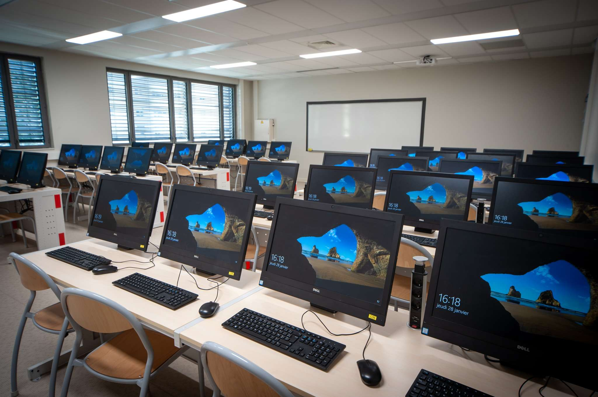

Déploiement de Salle Informatique (Milieu Scolaire)
Objectif : Mise en place complète d'un parc de 25 postes.
Actions : Montage, câblage réseau et masterisation via Clonezilla pour un gain de temps de 70% sur l'installation logicielle.
Infrastructure
Clonezilla